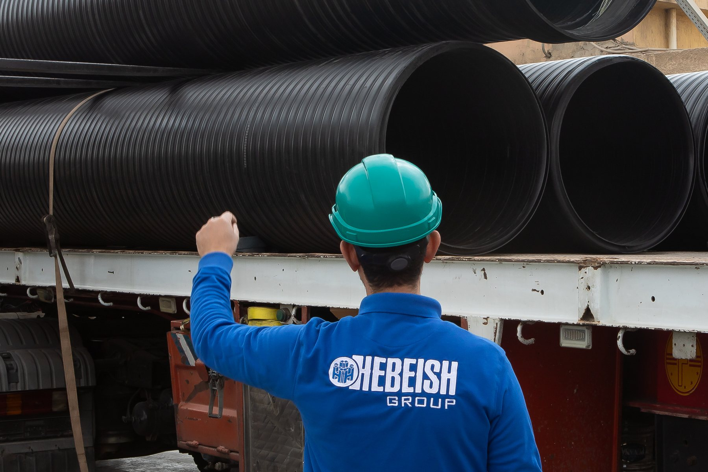
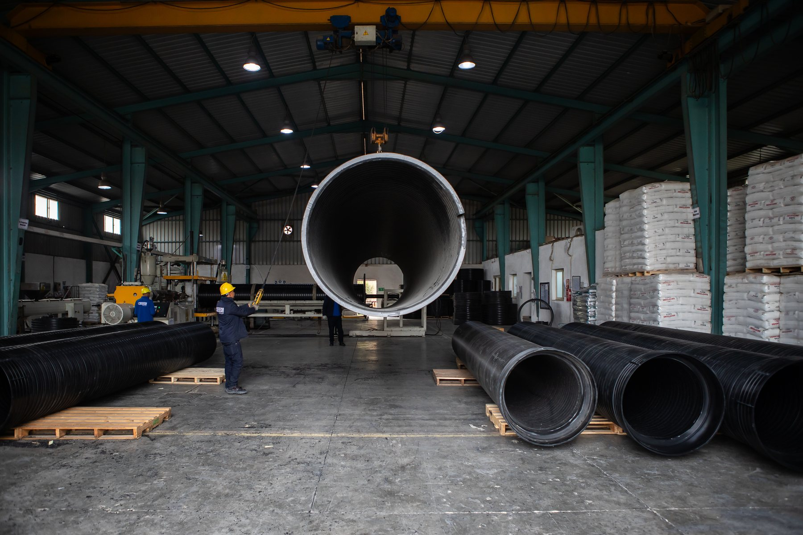
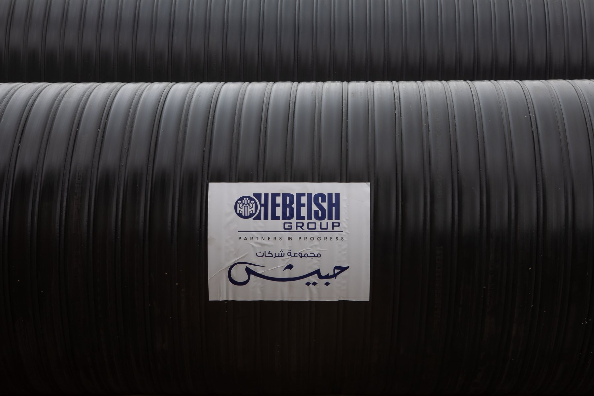

Use case
Useful for major infrastructure programs, remote workfronts, and phased installation schedules.Mobile factory model
Bring production closer to the project and keep supply aligned with execution.
The mobile factory concept helps tell a stronger infrastructure story: production capability positioned closer to demand, oversized pipe logistics handled with more control, and delivery paced around real site progress instead of long-distance guesswork.
- Near-Site Supply Position production closer to the workfront to reduce heavy transport dependence.
- Project Continuity Support phased delivery so pipe availability follows the pace of installation.
- Operational Control Give project teams better visibility across logistics, production, and handover timing.

Value
Shorter logistics loops, more responsive delivery windows, and tighter project coordination.Why it matters
A mobile factory page should communicate geography, continuity, and control.
Instead of presenting production as something distant and fixed, this page explains a more project-led model: manufacturing capability planned around where demand exists, how fast installation is progressing, and how sensitive transport and handling may be for large pipe systems.
Operational narrative
Closer production can make large infrastructure work feel faster, more stable, and easier to coordinate.
A mobile factory concept can support projects that need tighter delivery timing, reduced haul pressure, and more responsive manufacturing decisions. It gives Polygrande a strong B2B story around availability, execution readiness, and partnership on complex infrastructure programs.
Closer to demand
Reduce the distance between production and the installation zone when project conditions require it.
Built for phases
Match production and delivery to staged workfronts rather than a single, rigid shipment pattern.
Made for large systems
Give oversized pipe logistics a clearer operational story that feels practical and project-aware.


01
Faster response to project change
Support shifting schedules, package revisions, and staged delivery needs without relying only on distant plant cycles.
02
Lower logistics pressure
Reduce the strain of moving large pipe products across long routes when a nearer production model is strategically valuable.
03
Stronger partnership signal
Position Polygrande as a delivery-minded partner that organizes production around real execution needs, not just catalog supply.
Next step
Discuss how a mobile factory model could support your next project.
Use this page as the entry point for a commercial conversation around near-site production, deployment planning, and project-specific supply strategy.